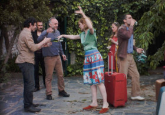

Der Geldkomplex
El complejo de dinero
Juan Rodrigáñez – Spain 2015
76 min – HD – Spanish OV Engl ST
Sc: Eloy Enciso, Eduard Mont de Palol, Juan Rodrigáñez – DoP: Roman Lechapelier – E: Eloy Enciso – SD+S: Nicolas Tsabertidis – P: Juan Rodrigáñez – With Lola Rubio, Eduard Mont de Palol, Rafael Lamata, Gianfranco Poddighe
Rafael resides on his southern Spanish finca with his friends, a group of bohemian refuseniks, adventurers and leftover revolutionaries. They loaf about in style in the idyllic surroundings, playing around, drinking, chatting, reciting verse, posing and performing. Early on, Rafael’s son shows up with his German fiancée, who soon runs off with Julio after some four-handed piano playing. Henry is on a relentless quest for new business ventures and is prospecting for gold in a secret mine;
Franziska prefers to ignore the need to earn money; Lucas reads book after book about economics and culture. And then there’s Domingo, who is supposed to relieve a certain Herr Müller of Düsseldorf of three million Euros.
This debut film is loosely based on Franziska zu Reventlow’s 1916 anarchic novel of the same name and is directed with a lightness of touch and subtle feeling for comedy and the absurd. It is an impish tale about our brief appearances on life’s stage and our struggle for the right to exist under the conditions of the current system. It is about ‘love or money’. And about friendship.
thursday 8 oct 8.00 pm filmmuseum münchen – opening film
Juan Rodrigáñez born in Madrid, Spain, in 1971. After studying film, he completed a degree in History. In
2008, he started the Tajo abajo production company, and made his first short film. He co-founded the Institute of Illiterate Art in 2013,
along with a group of choreographers and performers. DER GELDKOMPLEX is his first full-length feature film.